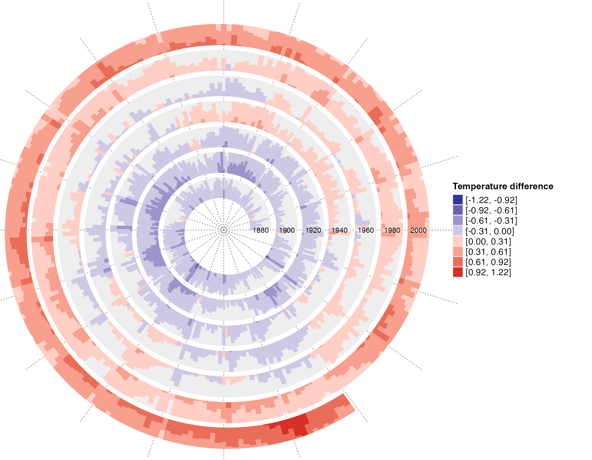
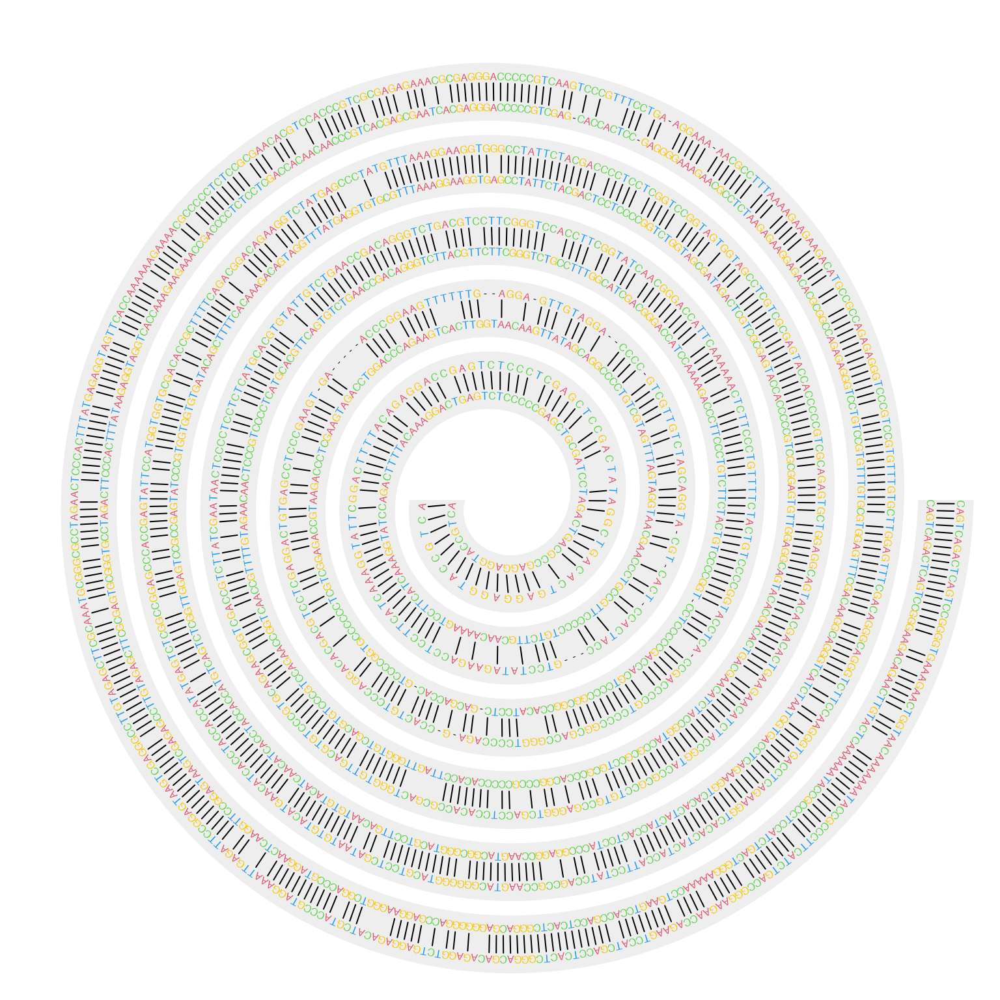

Real World Examples
Zuguang Gu (z.gu@dkfz.de)
2021-06-25
Source:vignettes/examples.Rmd
examples.RmdDaily downloads of ggplot2
In previous vignettes, I have already demonstrated the visualization of daily downloads of ggplot package. Here I make a more complete plot where I also add text annotations and legends. As I mentioned in previous vignettes, the plot visualizes log2-difference of the daily downloads to the mean downloads of the current year, which is calculated as follows:
library(spiralize)
library(lubridate)
library(ComplexHeatmap)
library(circlize)
df = readRDS(system.file("extdata", "ggplot2_downloads.rds", package = "spiralize"))
day_diff = as.double(df$date[nrow(df)] - df$date[1], "days")
year_mean = tapply(df$count, lubridate::year(df$date), function(x) mean(x[x > 0]))
df$diff = log2(df$count/year_mean[as.character(lubridate::year(df$date))])
df$diff[is.infinite(df$diff)] = 0
q = quantile(abs(df$diff), 0.99) # adjust outliers
df$diff[df$diff > q] = q
df$diff[df$diff < -q] = -qThe downloads have weekly patterns, i.e. there are less downloads in the weekends, thus in the spiral plot, I set the period as 52 weeks so that the same week in different years can be aligned in the radical direction. Now since each loop does not correspond a complete year, I additionally add annotation lines to show years.
The polar coordiante system is split into 12 parts where each part corresponds to a month.
spiral_initialize_by_time(xlim = range(df[, 1]), padding = unit(2, "cm"))## 'unit_to_axis' is set to 'days'.
## 'period' is set to 'years'.
spiral_track(height = 0.8)
spiral_horizon(df$date, df$diff, use_bars = TRUE)
spiral_highlight("start", "2015-12-31", type = "line", gp = gpar(col = 2))
spiral_highlight("2016-01-01", "2016-12-31", type = "line", gp = gpar(col = 3))
spiral_highlight("2017-01-01", "2017-12-31", type = "line", gp = gpar(col = 4))
spiral_highlight("2018-01-01", "2018-12-31", type = "line", gp = gpar(col = 5))
spiral_highlight("2019-01-01", "2019-12-31", type = "line", gp = gpar(col = 6))
spiral_highlight("2020-01-01", "2020-12-31", type = "line", gp = gpar(col = 7))
spiral_highlight("2021-01-01", "end", type = "line", gp = gpar(col = 8))
s = current_spiral()
d = seq(15, 360, by = 30) %% 360
for(i in seq_along(d)) {
foo = polar_to_cartesian(d[i]/180*pi, (s$max_radius + 1)*1.05)
grid.text(month.name[i], x = foo[1, 1], y = foo[1, 2], default.unit = "native",
rot = ifelse(d[i] > 0 & d[i] < 180, d[i] - 90, d[i] + 90), gp = gpar(fontsize = 10))
}
lgd = packLegend(
Legend(title = "Difference to\nyearly average", at = c("higher", "lower"),
legend_gp = gpar(fill = c("#D73027", "#313695"))),
Legend(title = "Year", type = "lines", at = 2015:2021,
legend_gp = gpar(col = 2:8))
)
draw(lgd, x = unit(1, "npc") + unit(10, "mm"), just = "left")
In the plot, I think there are the following messages that we can read:
- There are less downloads at weekends compared to weekdays.
- There are less downloads at the end of December and in Juanuary and Feburary.
- The downloads are also less in July and August, but not as few as winters.
- There are the highest number of downloads in November.
Classification of central nervous system tumors
Capper et. al., 2018 studied subtype classification of central nervous system tumors from DNA methylation data. In their dataset, there are 14 different tumor types (include controls) which are classified into 91 subtypes inferred from 2801 samples.
The most straightforward way is to visualize it as a heatmap which is composed by a list of rectangles.
df = readRDS(system.file("extdata", "CNS_tumour_classification.rds", package = "spiralize"))
n = nrow(df)
spiral_initialize(xlim = c(0, n), scale_by = "curve_length")
spiral_track(height = 0.4)
spiral_rect(1:n - 1, 0, 1:n, 1, gp = gpar(fill = df$meth_col, col = NA))
spiral_track(height = 0.4)
spiral_rect(1:n - 1, 0, 1:n, 1, gp = gpar(fill = df$tumor_col, col = NA))
r1 = rle(as.vector(df$tumor_type))
for(i in seq_along(r1$lengths)) {
if(i == 1) {
spiral_text(r1$lengths[1]/2, 0.5, r1$values[1], facing = "curved_inside", nice_facing = TRUE)
} else {
spiral_text( (sum(r1$lengths[1:(i-1)]) + sum(r1$lengths[1:i]))/2, 0.5, r1$values[i],
facing = "curved_inside", nice_facing = TRUE)
}
}
The plot already looks good. However, one problem of that plot is I actually drawed 2801x2 rectangles, which might results in that you can observe “interference wave lines” in the plot. This is because rectangles on spirals are not real rectangles while polygons and edges of the neighbouring polygons cannot perfectly match.
In the previous code where I draw the text of tumor types, I used rle() function to group the tumor types. Actually we can also use it for the heatmap because tumor types and methylation classes are already sorted and grouped, so that we don’t need to draw every single rectangle for every sample in a class, which we just draw one rectangle that covers all samples in that class.
In the following code, I first define a function spiral_rle() for this purpose. This function draws rectangles and adds labels on them.
spiral_rle = function(x, col, labels = FALSE) {
x = as.vector(x) # in case it is a factor
r1 = rle(x)
for(i in seq_along(r1$lengths)) {
if(i == 1) {
spiral_rect(0, 0, r1$lengths[1], 1, gp = gpar(fill = col[r1$values[1]], col = NA))
} else {
spiral_rect(sum(r1$lengths[1:(i-1)]), 0, sum(r1$lengths[1:i]), 1, gp = gpar(fill = col[r1$values[i]], col = NA))
}
}
if(labels) {
for(i in seq_along(r1$lengths)) {
if(i == 1) {
spiral_text(r1$lengths[1]/2, 0.5, r1$values[1], facing = "curved_inside", nice_facing = TRUE)
} else {
spiral_text( (sum(r1$lengths[1:(i-1)]) + sum(r1$lengths[1:i]))/2, 0.5, r1$values[i],
facing = "curved_inside", nice_facing = TRUE)
}
}
}
}I apply spiral_rle() to both tumor type track and methylation class track. Now the plot looks nicer. I also add legends for methylation classes, grouped by tumor types.
spiral_initialize(xlim = c(0, n), scale_by = "curve_length",
vp_param = list(x = unit(0, "npc"), just = "left"))
spiral_track(height = 0.4)
meth_col = structure(names = unique(df$meth_class), unique(df$meth_col))
spiral_rle(df$meth_class, col = meth_col)
spiral_track(height = 0.4)
tumor_col = structure(names = unique(as.vector(df$tumor_type)), unique(df$tumor_col))
spiral_rle(df$tumor_type, col = tumor_col, labels = TRUE)
lgd_list = tapply(1:nrow(df), df$tumor_type, function(ind) {
Legend(title = df$tumor_type[ind][1], at = unique(df$meth_class[ind]),
legend_gp = gpar(fill = unique(df$meth_col[ind])))
})
# here set max_height to the height of the image so that the legends are automatically arranged
lgd = packLegend(list = lgd_list, max_height = unit(7, "inch"))
draw(lgd, x = unit(1, "npc") + unit(2, "mm"), just = "left")
First 5000 digits of π
This example visualizes the first 5000 digits of π. The digits of π is from https://www.math.utah.edu/~alfeld/math/pi.html.
The following code first format the π digits as a vector of integers.
pi_txt = readLines(system.file("extdata", "pi_10000_digits.txt", package = "spiralize"))
pi_txt = gsub("\\s", "", pi_txt)
pi_digits = strsplit(pi_txt, "")[[1]][-(1:2)]
pi_digits = as.integer(pi_digits)
pi_digits = pi_digits[1:5000]
head(pi_digits)## [1] 1 4 1 5 9 2Then each digit is assigned to a color and the point size changes according to the value of the corresponding digit.
# There are 30 loops in the spiral
spiral_initialize(c(0,5000), end = 365*30, scale_by = "curve")
spiral_track(height = 1, background = FALSE)
spiral_points(1:5000-0.5, 0.5, pch = 16, size = unit((pi_digits+1)/5, "mm"),
gp = gpar(col = pi_digits + 1))
The next plot shows another way to visualize π. In the plot, two neighbour digits of 1 are connected, e.g. a segment connects the first and the second 1, then a second segment connects the third and the fourth 1, and so on. The segments are assigned with random colors.
spiral_initialize(c(0,5000), end = 365*30, scale_by = "curve")
spiral_track(height = 1, background = FALSE)
x = which(pi_digits == 1)
if(length(x) %% 2 == 1) x = x[-1]
n = length(x)
x1 = x[1:(n/2)*2 - 1]
x2 = x[1:(n/2)*2]
spiral_segments(x1 - 0.5, 0.5, x2 - 0.5, 0.5,
gp = gpar(col = rand_color(length(x1)), lwd = runif(length(x1), min = 0.5, max = 6)))
Tree of life
This example visualizes tree of life from 3083 organisms. The data is from Hug et. al., 2016, supplementary data 2.
To highlight different branches, I first convert the phylo object into a dendrogram object, then apply dendextend::cutree() to split the dendrogram into several subtrees. Note the function spiral_rel() was defined in the the example “Classification of central nervous system tumors”.
# https://www.nature.com/articles/nmicrobiol201648
library(ape)
tree = readRDS(system.file("extdata", "life_tree_Nat_Microbiol_2016.rds", package = "spiralize"))
tree##
## Phylogenetic tree with 3083 tips and 3081 internal nodes.
##
## Tip labels:
## Bacteria_Proteobacteria_Gammaproteobacteria_Enterobacteriales_Enterobacteriaceae_Lelliottia_amnigena_CHS_78, Bacteria_Proteobacteria_Gammaproteobacteria_Enterobacteriales_Enterobacteriaceae_Leclercia_adecarboxylata_Leclerc_1783_ATCC_23216, Bacteria_Proteobacteria_Gammaproteobacteria_Enterobacteriales_Enterobacteriaceae_Kluyvera_ascorbata_ATCC_33433, Bacteria_Proteobacteria_Gammaproteobacteria_Enterobacteriales_Enterobacteriaceae_Citrobacter_rodentium_ICC168, Bacteria_Proteobacteria_Gammaproteobacteria_Enterobacteriales_Enterobacteriaceae_Salmonella_enterica_Enterica_sv._Heidelberg_41578, Bacteria_Proteobacteria_Gammaproteobacteria_Enterobacteriales_Enterobacteriaceae_Escherichia_coli_K12__W3110, ...
##
## Unrooted; includes branch lengths.
n = length(tree$tip.label)
spiral_initialize(xlim =c(0, n), scale_by = "curve_length")
spiral_track()
spiral_phylo(tree)
dend = phylo_to_dendrogram(tree)
library(dendextend)
# note for large dendrograms, cutting by height is much more facter than cutting by k
cl = dendextend::cutree(dend, h = 2)
n_cl = length(unique(cl))
col = structure(names = unique(cl), rand_color(n_cl, luminosity = "bright", transparency = 0.75))
spiral_rle(cl, col = col)
Global temperature change
This example visualizes the global temperature change (relative to a base line) since year 1880. The data is download from https://datahub.io/core/global-temp. The temperature data has two sources. In the example code, I use the data from “GCAG”. In the spiral, each loop contains 20 years.
df = readRDS(system.file("extdata", "global_temperature.rds", package = "spiralize"))
df = df[df$Source == "GCAG", ]
spiral_initialize_by_time(xlim = range(df$Date), unit_on_axis = "months", period = "year",
period_per_loop = 20, polar_lines_by = 360/20, vp_param = list(x = unit(0, "npc"), just = "left"))
spiral_track()
lt = spiral_horizon(df$Date, df$Mean, use_bar = TRUE)
spiral_text("1880-01-01", 0.5, "1880", gp = gpar(fontsize = 8))
spiral_text("1900-01-01", 0.5, "1900", gp = gpar(fontsize = 8))
spiral_text("1920-01-01", 0.5, "1920", gp = gpar(fontsize = 8))
spiral_text("1940-01-01", 0.5, "1940", gp = gpar(fontsize = 8))
spiral_text("1960-01-01", 0.5, "1960", gp = gpar(fontsize = 8))
spiral_text("1980-01-01", 0.5, "1980", gp = gpar(fontsize = 8))
spiral_text("2000-01-01", 0.5, "2000", gp = gpar(fontsize = 8))
lgd = horizon_legend(lt, title = "Temperature difference")
draw(lgd, x = unit(1, "npc") + unit(2, "mm"), just = "left")
Sunspot cycle
This example visualizes the sunspot cycles start from year 1749. The activity of sunspot has an average period of 11 years, thus in the spiral, each loop contains 11 years. The data is from http://sidc.be/silso/datafiles and the plot tries to reproduce http://www.astrostatistics.org/projects/solar-cycle.
df = readRDS(system.file("extdata", "sunspot.rds", package = "spiralize"))
date = as.Date(paste(df$year, df$month, "1", sep = "-"))
spiral_initialize_by_time(xlim = range(date), unit_on_axis = "months", period = "years", period_per_loop = 11,
polar_lines_by = 360/11, vp_param = list(x = unit(0, "npc"), just = "left"))
spiral_track()
col_fun = colorRamp2(seq(min(df$sunspot_number), max(df$sunspot_number), length = 3), c("blue", "white", "red"))
lt = spiral_horizon(date, df$sunspot_number, use_bar = TRUE)
lgd = horizon_legend(lt, title = "Sunspot count", format = "%.0f")
draw(lgd, x = unit(1, "npc") + unit(2, "mm"), just = "left")
DNA sequence alignment
This example visualizes pairwise alignment of CDS (coding sequence) of the gene TP53 between human and mouse. The alignment was obtained by blast.
First I read the blast result and format it as two vectors of letters.
lines = readLines(system.file("extdata", "tp53_blast.txt", package = "spiralize"))
query = lines[seq(1, length(lines), by = 4)]
subject = lines[seq(3, length(lines), by = 4)]
query = gsub("^\\S+\\s+\\S+\\s+|\\s+\\S+$", "", query)
query = paste(query, collapse = "")
query = strsplit(query, "")[[1]]
subject = gsub("^\\S+\\s+\\S+\\s+|\\s+\\S+$", "", subject)
subject = paste(subject, collapse = "")
subject = strsplit(subject, "")[[1]]The plot is mainly drawn with spiral_text() and spiral_segments().
n = length(query)
col = c("A" = 2, "T" = 4, "C" = 3, "G" = 7, "-" = "black")
spiral_initialize(xlim = c(0, n), start = 180, end = 360*6, scale_by = "curve")
spiral_track()
spiral_text(1:n - 0.5, 0.3, query, facing = "inside",
gp = gpar(fontsize = 6, col = col[query]), just = "top",)
spiral_text(1:n - 0.5, 0.7, subject, facing = "inside",
gp = gpar(fontsize = 6, col = col[subject]), just = "bottom")
x = which(query == subject)
spiral_segments(x - 0.5, 0.35, x - 0.5, 0.65)
Integrative visualization of methylation and histone modifications for BCAT2
This example visualizes DNA methylation and four histone modification signals along BCAT2 gene. The data is from Roadmap project.
df_list = readRDS(system.file("extdata", "BCAT2_tracks.rds", package = "spiralize"))
spiral_initialize_by_gcoor(xlim = c(df_list$range[1, 2], df_list$range[1, 3]), end = 360*3,
vp_param = list(x = unit(0, "npc"), just = "left"))
exons = df_list$exons
exons = exons[exons[, 8] == "exon", ]
spiral_track(height = 0.1, background = FALSE)
spiral_lines(TRACK_META$xlim, 0.5)
spiral_rect(exons[, 2], 0.1, exons[, 3], 0.9, gp = gpar(fill = "grey"))
spiral_segments(49314320, 0, 49314320, -1)
spiral_segments(49314320, -1, 49314320 - 200, -1, arrow = arrow(length = unit(2, "mm")))
spiral_text(49314320, -1, "TSS", hjust = -0.2, facing = "outside", gp = gpar(fontsize = 6))
spiral_segments(49298321, 0, 49298321, -1)
spiral_text(49298321, -1, "TES", hjust = -0.2, facing = "inside", gp = gpar(fontsize = 6))
spiral_points(49298321, -1, pch = 16)
meth = df_list$meth
spiral_track(height = 0.1)
meth_col = colorRamp2(c(0, 0.5, 1), c("blue", "white", "red"))
spiral_segments(meth[, 2], 0, meth[, 2], 1, gp = gpar(col = meth_col(meth[, 5])))
lgd_list = list(
Legend(title = "Methylation", col_fun = meth_col)
)
i = 1
for(mark in grep("H3", names(df_list), value = TRUE)) {
df = df_list[[mark]]
i = i + 1
spiral_track(height = 0.1)
lt = spiral_horizon( (df[, 2] + df[, 3])/2, df[, 5], pos_fill = i,
use_bars = TRUE, bar_width = df[, 3] - df[, 2])
lgd_list = c(lgd_list, list(horizon_legend(lt, title = mark)))
}
spiral_lines(TRACK_META$xlim, 1)
at = seq(df_list$range[1, 3], df_list$range[1, 2], by = -1000)
labels = -(seq(df_list$range[1, 3], df_list$range[1, 2], by = -1000) - 49314320)
labels = paste0(labels/1000, "KB")
spiral_axis(at = at, labels = labels)
spiral_text(49297321, 0.5, "Methylation", hjust = 0, facing = "inside", gp = gpar(fontsize = 6), track_index = 2)
spiral_text(49297321, 0.5, "H3K4me1", hjust = 0, facing = "inside", gp = gpar(fontsize = 6), track_index = 3)
spiral_text(49297321, 0.5, "H3K4me3", hjust = 0, facing = "inside", gp = gpar(fontsize = 6), track_index = 4)
spiral_text(49297321, 0.5, "H3K9me3", hjust = 0, facing = "inside", gp = gpar(fontsize = 6), track_index = 5)
spiral_text(49297321, 0.5, "H3K27ac", hjust = 0, facing = "inside", gp = gpar(fontsize = 6), track_index = 6)
spiral_text(49315320, 0.5, "Methylation", hjust = 1, facing = "inside", gp = gpar(fontsize = 6), track_index = 2)
spiral_text(49315320, 0.5, "H3K4me1", hjust = 1, facing = "inside", gp = gpar(fontsize = 6), track_index = 3)
spiral_text(49315320, 0.5, "H3K4me3", hjust = 1, facing = "inside", gp = gpar(fontsize = 6), track_index = 4)
spiral_text(49315320, 0.5, "H3K9me3", hjust = 1, facing = "inside", gp = gpar(fontsize = 6), track_index = 5)
spiral_text(49315320, 0.5, "H3K27ac", hjust = 1, facing = "inside", gp = gpar(fontsize = 6), track_index = 6)
lgd = packLegend(list = lgd_list, max_height = unit(8, "in"))
draw(lgd, x = unit(1, "npc") + unit(2, "mm"), just = "left")